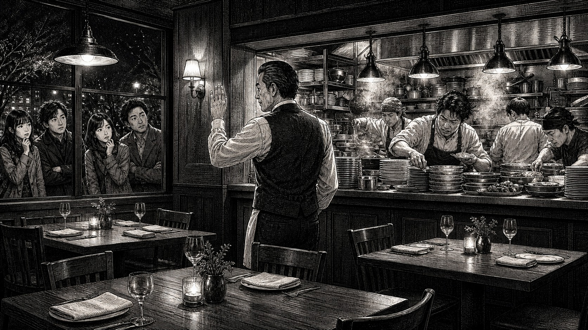

テーブル空いてるのに、なんで案内してくれないの？

どーも、とーるです。
ファミレスとか焼肉屋へ行ったとき、こんな経験ありませんか？
入口には3組くらい待っている。店内を見る。
……いや、テーブル空いてるじゃん。
しかも2つ、3つ空いている。
なのに呼ばれない。心の中で、「いや、そこ座らせてよ。」と思う（笑）僕もあります。
でも、回すのが上手い飲食店ほど、あえて案内しないことがあります。
これ、店員さんがサボっているわけじゃありません。
ちゃんと理由があります。
同じ30分でも、感じ方が全然違う
例えば、あなたが人気の飲食店へ行ったとします。
入店から料理が出てくるまで、合計30分かかった。まず一つ目。
25分、店の外で並びました。
ようやく「お待たせしましたー！」と案内される。席について注文。
5分後。料理が来る。さて、どうでしょう。
もちろん25分並んでいるので「待ったなー」とは思うでしょう。
でも、店に対してそこまで悪い印象を持たない人も多いと思います。
むしろ、「人気なんだな」「やっぱり混んでるな」くらい。
では、もう一つ。店の外では10分待ちました。案内される。
テーブルにつく。注文する。……来ない。10分。まだ来ない。15分。
隣の料理は来た。20分。まだ来ない。どうでしょう。
たぶん、時計見ますよね（笑）「遅くない？」って。
でも、よく考えてください。
最初のパターンも、25分＋5分。合計30分。
二つ目も、10分＋20分。合計30分。
なのに、感じ方が違う。
席に座った瞬間から「提供される側」になる
これは、単純に待ち時間の長さだけの問題じゃありません。
列に並んでいるときって、
まだ「順番を待っている」という感覚があります。前に5組いる。
「ああ、混んでるんだな」「人気なんだな」。理由も見える。
ところが、席に案内されて、注文をした瞬間。頭の中では、サービスが始まっています。お金を払う前提で注文して、提供を待っている状態です。
そこで20分何も来ない。すると、
「人気だから仕方ない」じゃなく、
「提供が遅い」という評価になりやすい。
「席空いてるのに」は、店も分かっています
だから、ファミレスや焼肉屋で、
席が空いているのに案内されないことがあります。
もちろん単純に片付けが終わっていない場合もあります。
でも、オペレーションとして、あえて止めていることもあります。
厨房を見る。今、注文が何件入っているか。
ホールスタッフは何人いるか。
ドリンクは回っているか。レジに人が必要か。
片付けは追いついているか。
料理の提供時間はどれくらいになっているか。
そういうものを見ながら、
リーダーが「まだ入れないで」とか、
「次の1組案内しちゃお」と調整する。
席数が50席あるから、50人入れればいい。じゃないんです。
そこを見ています。これが、回すのが上手い店です。
満席にすることが正解とは限らない
これ、前回の#コラム110で書いた話にもつながります。
僕がお世話になっている老舗居酒屋も、テレビ取材なんかは断っています。
認知が一気に広がって、
新規客で店がいっぱいになると、
今まで来てくれていた常連さんが入れなくなるから。
これも同じで、入れられるだけ入れることが、必ずしも正解じゃない。なんです。
15席ある。だから15人入れる。じゃない。
今、厨房が8人分しか回せないなら、少し待ってもらう。
その方が、中にいる8人へちゃんと料理を出せます。
「待たせたら帰っちゃうじゃん」
もちろん、そう思いますよね。
外で待っていた人が、「やっぱり別の店行こう」となることもあります。
あります。でも、僕は、それでもいい場合があると思っています。
入口で「30分待ちかー。また今度にしよう。」
これは、店への不満とは限りません。
むしろ「人気なんだな」で終わることもある。
次回来るかもしれません。
でも、席につかせる。注文も取る。そこから40分待たせる。これは、「この店、遅い」になります。
帰る人が一人出ることを恐れて、
キャパ以上のお客さんを入れ、
中にいる10人の満足度を落とす。
どっちがいいのか、という話なんです。
SNS起業でも「とりあえず入れる」が起きる
SNSでも、似たようなことがあります。募集した。
予想以上に申込みが来た。
本当は、自分がちゃんと対応できるのは5人くらい。
でも、10人申込みが来た。
「せっかくだから全員受けよう！」となる。売上は倍です。うれしい。
でも、始まってみたら、質問返信が遅れる。添削が追いつかない。
Zoomが増える。納品が遅れる。返信が雑になる。
本人に悪気はありません。
その結果、
「返信遅かったです」「思ったよりサポートしてもらえませんでした」「質問しづらかったです」となる。
これ、飲食店でいう、席に案内したあとで20分料理が来ない状態です。
売上を最大化するより、提供できる人数を知る
SNSでは、
「何人売れた」「何席満席になった」「募集開始○分で満席」が成果として見えやすいです。
でも、僕はその数字を見ると、もう一つ気になります。その人数、本当にちゃんと対応できるの？
10人売れることより、10人へちゃんと提供できること。
20人集めることより、20人が満足できる仕組みを作ること。
こっちまで含めて、事業だと思っています。
キャパが5人なら5人でいい
最初は、5人しか対応できなくてもいいんです。まず5人。
そこで、どんな質問が多いのか。
どこで時間がかかるのか。
毎回同じ説明をしていないか。
何を動画にできるのか。
どこを自動化できるのか。
そういうものが分かってくる。
そこから、5人だったキャパを10人にする。
10人を20人にする。そこで初めて、LINEを整えたり、
アプリを使ったり、
スタッフを入れたりする。
この順番です。
「まだ案内しない」は、機会損失じゃない
目の前にお客さんがいると、つい、「逃したくない」と思います。
でも、お客さんを入れない判断って、必ずしも機会損失じゃありません。
今入れたことで、中にいるお客さんへの価値が下がるなら、
少し待ってもらう。
場合によっては、「今回はいっぱいなので、次回お願いします」でもいい。
飲食店なら、外で「人気なんだな。
また来よう」で帰ってもらう。
SNSなら、「今回は満席でした。
次回募集を待とう」と思ってもらう。その方が、
無理やり受け入れて「思ってたのと違った」になるより、
ずっといいことがあります。
✦
だから、ファミレスで、
テーブルが3つ空いているのに、全然呼ばれないとき。「何してんねん。」
と思う前に、厨房の奥では誰かが「いや、今入れたら回らん。」
と判断しているのかもしれません。
そして、その判断ができる店ほど、実はちゃんとしています。
集客も同じです。
もっと言えば、満席にできるからといって、満席にする必要もありません。
今の自分が、何人ならちゃんと満足させられるのか。そこを知る。
そして、その人数を少しずつ増やしていく。
「もっと集客しなきゃ」の前に、一回考えてみてください。
今、テーブル空いてますか？
そして、本当に次のお客さん、案内して大丈夫ですか？
とーる｜猫好きの行動経済アナリスト